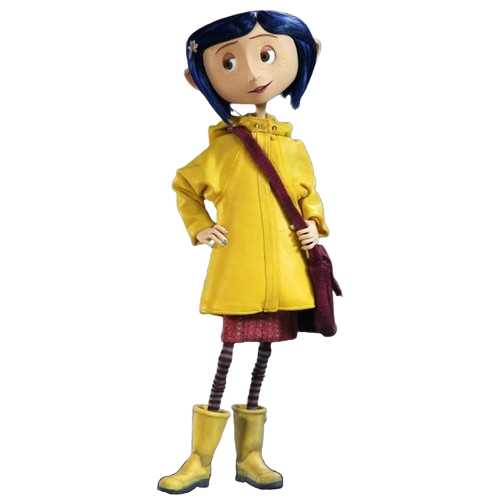
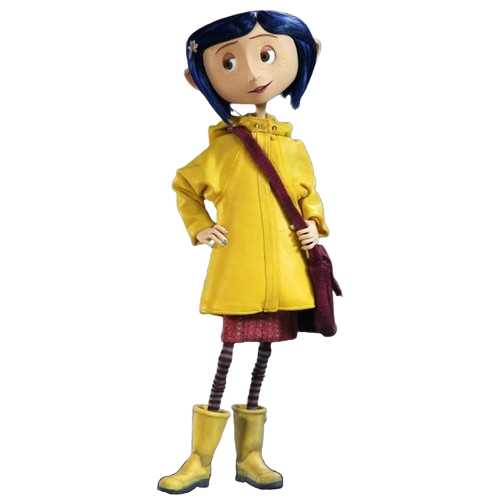
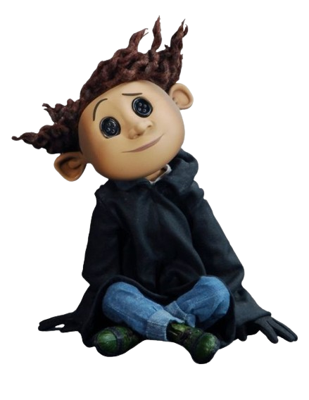
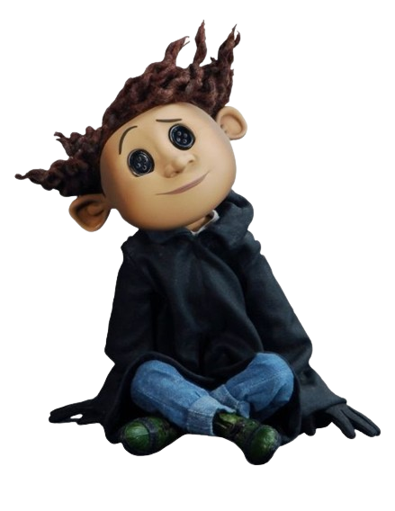
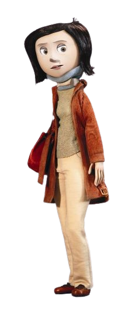
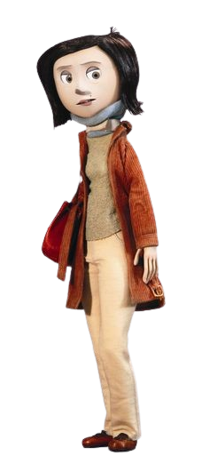
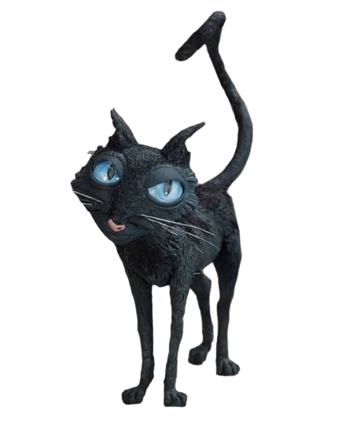
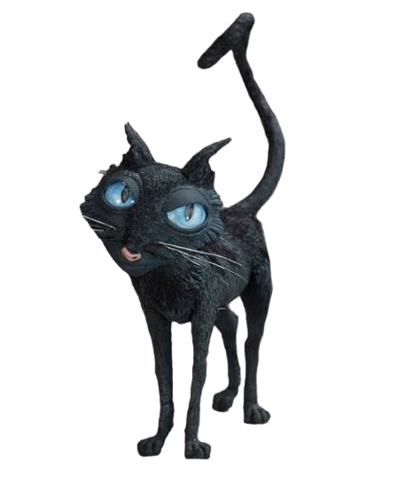

Coraline, uma garotinha de 11 anos de idade, filha única,
muito entediada de ter se mudado para o palácio cor-de-rosa
e ter deixado seus amigos. Adora jardinagem e detesda a comida
que seu pai faz
É uma menina muito curiosa, e como não tem atenção de seus pais,
vai ao outro mundo
 

Wybourne Lovat, tinha 11 anos quando conheceu coraline.
É o misterioso e curioso neto da dona do Palácio cor de Rosa.
Ele só está na adaptação do filme, com o motivo de
ver uma garota andando e ir
atormenta-la(no caso alertá-la).
 

A verdadeira mãe de Coraline é uma redatora de catálogo
de jardinagem, e escritora. É vista principalmente trabalhando
duro em seu computador, constantemente sob pressão para fornecer
para sua família neste momento de fracasso econômico


A outra mãe, também conhecida como Beldam ou Bela dama,
é a principal antagonista do filme Coraline. Ela é uma
bruxa malévola que muda de forma e atrai criaças para a
sua dimensão. Possui seus marcantes olhos de botões.
 

O Gato é um dos principais personagens coadjuvantes da história.
Ele demonstra a habilidade de aparecer e desaparecer como quiser,
geralmente a usa para se esconder do perigo ou para ajudar Coraline.
Por razões misteriosas, ele possui capacidade de falar no Outro Mundo.